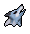
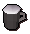

Summoning Guide
Introduction
Summoning is the newest skill to the game of this era. To start the skill you will be required to complete the Wolf Whistle quest. It is a skill that works with every skill by creating pouches that contain familiars that are used for various things.
Charms
Charms are what makes the show happen
Gold Charms
 Blue Charms
Blue Charms
 Green Charms
Green Charms
 Crimson Charms
Crimson Charms
Familiars
Familiars are creatures that player can summon to help them with different skills. The familiars have many different ability, from helping you in combat to collecting extra resources while gathering. All familiars have a special move which can be activated using Summoning scrolls. Only one may be summoned at a time and must be dismissed before another can be summoned.
| Familiar |
Image |
Time Spawned |
Point Cost |
Combat Level |
Special Move |
Boost |
Other Abilities |
| Level 1  | Spirit Wolf | 6 | 1 | 26 | Howl | N/A | N/A |
| Level 4 | Dread Fowl  |
4 | 1 | 26 | Dreadfowl Strike | Farming Boost | N/A |
| Level 10 | Spirit Spider | 15 | 2 | 25 | Egg Spawn | N/A | N/A |
| Level 13 | Thorny Snail | 16 | 2 | 26 | Slime Spray | Farming Boost | Beast of Burden(3) |
| Level 16 | Granite Crab  |
18 | 2 | 26 | Stony Shell | Fishing Boost (1) | Forager |
| Level 17 | Mosquito | 12 | 2 | 32 | Pester | N/A | N/A |
| Level 16 | Desert Wyrm  |
18 | 1 | 31 | Electric Lash | Mining Boost (1) | Mines ore up to iron |
| Level 19 | Spirit Scorpion  |
17 | 2 | 51 | Venom Shot | N/A | N/A |
| Level 23 | Albino Rat | 22 | 3 | 37 | Cheese Feast | N/A | Forager (5) |
| Level 25 | Spirit Kalphite  |
22 | 3 | 39 | Sandstorm | N/A | Beast of Burden (6) |
| Level 28 | Compost Mound | 24 | 6 | 37 | Generate Compost | Farming boost (1) | Forager |
| Level 29 | Giant Chinchompa  |
31 | 1 | 42 | Explode | N/A | N/A |
| Level 31 | Vampire Bat  |
33 | 4 | 44 | Vampire Touch | N/A | Light Enhancer |
| Level 32 | Honey Badger  |
25 | 4 | 45 | Insane Ferocity | N/A | N/A |
| Level 33 | Beaver  |
27 | 4 | 31 | MultiChop | Woodcutting Boost (2) | Fletcher |
| Level 34 | Void ravager | 27 | 4 | 46 | Call to Arms | Mineing Boost (1) | N/A |
| Level 34 | Void spinner  |
27 | 4 | 44 | Call to Arms | N/A | Restores 1 hitpoint every 15 seconds |
| Level 34 | Void shifter | 94 | 4 | 40 | Call to Arms | N/A | Teleports you out at 10% hp or less |
| Level 34 | Void Torcher  |
94 | 4 | 46 | Call to Arms | N/A | N/A |
| Level 36 | Bronze Minotaur  |
30 | 9 | 50 | Bronze Bull Rush | N/A | N/A |
| Level 40 | Bull Ant  |
30 | 5 | 50 | Unburden | N/A | Beast of Burden (9) |
| Level 41 | Macaw | 31 | 5 | 58 | Herb Call | N/A | Improved Herb Drops/Forager (1) |
| Level 42 | Evil Turnip | 30 | 5 | 62 | Evil Flames | N/A | Forager(2) evil turnip slices |
| Level 43 | Spirit Cockatrice  |
36 | 5 | 58 | Petrifying Gaze | N/A | Forager (1) Cockatrice eggs |
| Level 43 | Spirit Guthatrice | 36 | 5 | 56 | Petrifying Gaze | N/A | Forager (1) Cockatrice eggs |
| Level 43 | Spirit Saratrice  |
36 | 5 | 56 | Petrifying Gaze | N/A | Forager (1) Cockatrice eggs |
| Level 42 | Spirit Zamatrice  |
36 | 5 | 56 | Petrifying Gaze | N/A | Forager (1) Cockatrice eggs |
| Level 43 | Spirit Pengatrice  |
36 | 5 | 56 | Petrifying Gaze | N/A | Forager (1) Cockatrice eggs |
Extra Mining Information
Summoning Boosts

Dwarven Stout - Drinking this will raise a player's Mining and Smithing levels by 1 for a short time.
Mature Dwarven Stout - can raise Mining temporarily by up to 6; however, it can also decrease it by up to 6.
In 2009scape, we had decided in the polls that we would add Skill Cape Perks in the game. You are able to find more perks by clicking here. There has not been any decided skill cape perks for this skill yet.
Note: If you see something not on this page that currently is in-game please let Summer know.